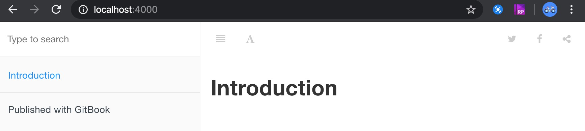
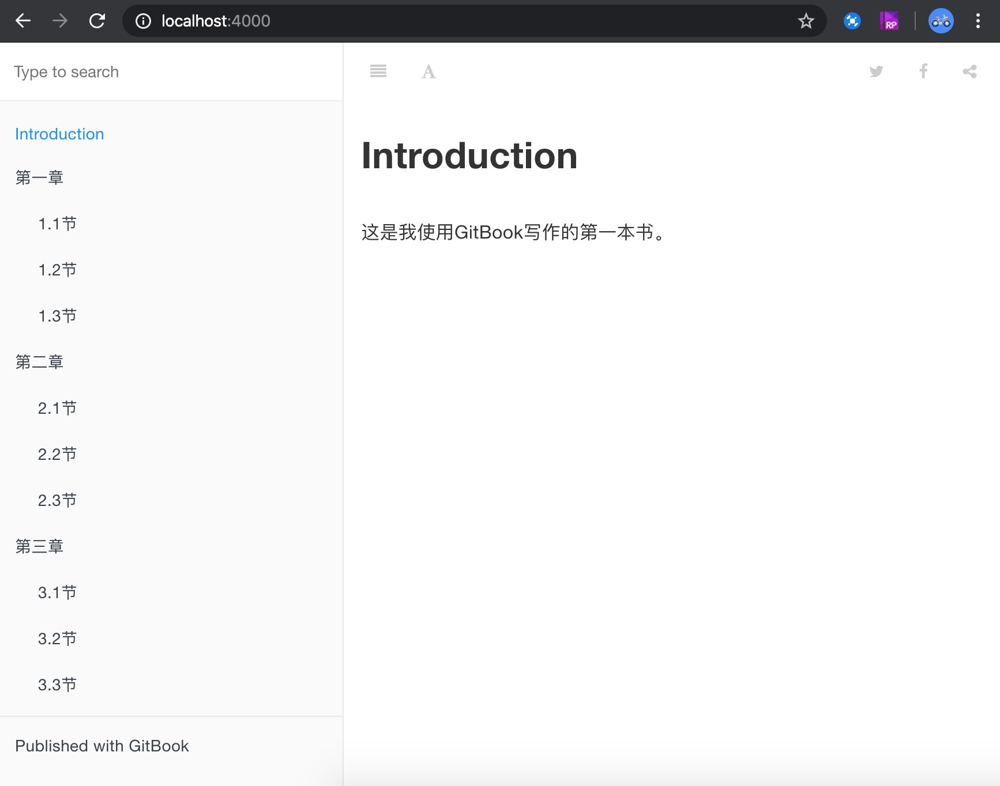

写作
一、写作命令
本地使用gitbook编写、维护书籍时，一般来讲两个命令就够(Go)了：
- gitbook init
- 创建新书籍工作空间（生成
README.md和SUMMARY.md两个文件） - 根据章节编排文件
SUMMARY.md的 Markdown 列表生成文件（会按目录层级创建文件夹）
- 创建新书籍工作空间（生成
- gitbook serve
- 编译Markdown文件并启动Web服务，支持本地实时预览
二、写作示例
2.1. 创建新书籍
# 创建用于管理书籍源文件的文件夹，并进入该文件夹
$ export BOOK_WORKSPACE=/tmp/mybooks/hello-gitbook
$ mkdir -p ${BOOK_WORKSPACE} && cd ${BOOK_WORKSPACE}
# 书籍初始化
$ gitbook init
# 以下是日志输出，可以看到该文件夹中被添加了两个新文件
warn: no summary file in this book
info: create README.md
info: create SUMMARY.md
info: initialization is finished
2.2 书籍预览
# 使用serve命令编译Markdown文件并启动本地web服务
$ gitbook serve
# 以下是日志输出，可以看到GitBook默认使用的插件、本次编译的文件数、Web服务端口号
Live reload server started on port: 35729
Press CTRL+C to quit ...
info: 7 plugins are installed
info: loading plugin "livereload"... OK
info: loading plugin "highlight"... OK
info: loading plugin "search"... OK
info: loading plugin "lunr"... OK
info: loading plugin "sharing"... OK
info: loading plugin "fontsettings"... OK
info: loading plugin "theme-default"... OK
info: found 1 pages
info: found 0 asset files
info: >> generation finished with success in 0.6s !
Starting server ...
Serving book on http://localhost:4000
打开浏览器，访问 http://localhost:4000

2.3 写作
Step1. 使用文本编辑器打开 SUMMARY.md 文件，通过Markdown列表语法编排书籍章节目录
# Summary
* [Introduction](README.md)
* 第一章
* [1.1节](chapter01/1.md)
* [1.2节](chapter01/2.md)
* [1.3节](chapter01/3.md)
* 第二章
* [2.1节](chapter02/1.md)
* [2.2节](chapter02/2.md)
* [2.3节](chapter02/3.md)
* 第三章
* [3.1节](chapter03/1.md)
* [3.2节](chapter03/2.md)
* [3.3节](chapter03/3.md)
Step2. 初始化章节文件
# 再次执行gitbook init命令，GitBook会根据SUMMARY.md创建章节文件
$ gitbook init
info: create chapter01/1.md
info: create chapter01/2.md
info: create chapter01/3.md
info: create chapter02/1.md
info: create chapter02/2.md
info: create chapter02/3.md
info: create chapter03/1.md
info: create chapter03/2.md
info: create chapter03/3.md
info: create SUMMARY.md
info: initialization is finished
Step3. 专注编辑指定章节的内容
比如 README.md 文件添加以下内容
# Introduction
这是我使用GitBook写作的第一本书。
Step4. 执行书籍预览命令，访问 http://localhost:4000

That is all, Enjoy it!